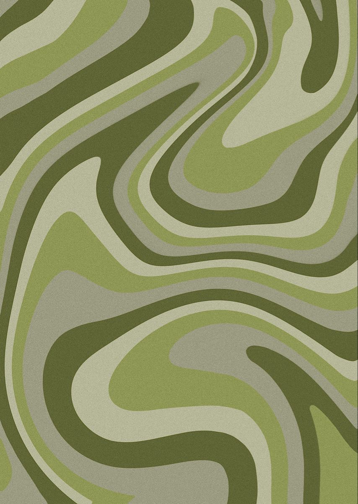

Lab 15: Fancy CSS I

Subject
The purpose of the lab is to style our page with different CSS features learned from the lecture such as text-shadow, box--shadow, gradient, filters, rounded corners, object-fit, and transform.
Challenges
Part of the challenge was to understand the different funtions and how these change the look of the page. Overall I enjoyed testing and trying different things like the number of px and colors.
Results
Here are the results :)